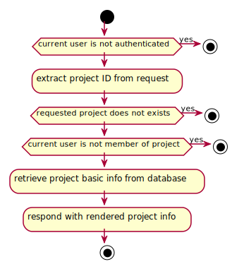
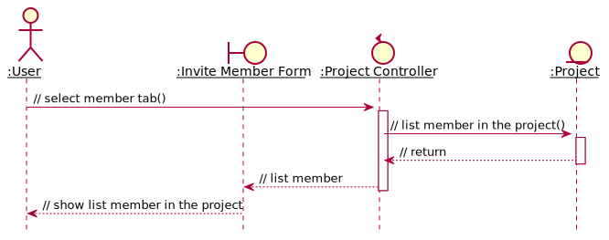

Project Management¶
In this section, we present the system design for project management use cases. Task management use cases, while indeed are part of project management, are discussed in the next.
Since Quart, the framework we employ, is not strictly object-orientated and the design involves a lot of short-circuiting, it is represented via activity diagram instead of the traditional UML diagrams often used in this context, namely sequence diagrams and collaboration diagrams.
Create Project¶
The design for the use case Create Project is described in Figure 16.
![@startuml
start
:receive request for creating project;
if (current user is not authenticated) then (yes)
stop
endif
if (current user's role is assistant) then (yes)
stop
endif
:send creation form to current user;
:receive form from current user;
if (form is invalid) then (yes)
stop
endif
:extract project name and
description from request's form;
:let project be collection of name,
description and members
(including current user);
:insert project into database;
:redirect to new project's info page;
stop
@enduml](../../_images/plantuml-6de9f8d9c677e6c7da94f713bd981004b42cef25.svg)
Figure 16 Activity diagram illustrating project creation¶
Show Project Information¶
The design for the use case Show Project Information is described in Figure 17.

Figure 17 Activity diagram illustrating showing project’s basic information¶
Edit Project Information¶
The design for the use case Edit Project Information is described in Figure 18.

Figure 18 Activity diagram illustrating updating project’s basic information¶
List member¶
The function allow listing the members in the projects
The implementation involves only projects database table, in which we get
the member list of members. Two fields are being called is supervisors and
students
When user navigate to member tab, the list of members in the project,
classified as supervisors and students is shown in a form.

Figure 19 Analysis sequence diagram for the member listing process¶
Invite member¶
Since the project is initialized with only the creator, we need a function to invite members. Only who is in the project could introduce a new member.
The implementation involves two storages:
- projects database table: which members field has been updated.
- users database table: which projects field has been updated.
When user enters the invited member’s name, the project controller checks
both projects and user database whether the name is already in
the project, or that user is an assistant, or that user has not registered.
If all three conditions is satisfied, two databases is updated accordingly.
![@startuml
hide footbox
autoactivate on
skinparam sequenceParticipant underline
actor ":User" as usr
boundary ":Invite Member Form" as form
control ":Project Controller" as ctl
entity ":Project" as db_prj
entity ":User" as db_usr
usr -> form : // enters invited member's name()
form -> ctl : // send form()
ctl -> db_prj : // add new user's name to project database()
ctl <-- db_prj : // return
ctl -> db_usr : // add project's id to new user's database()
ctl <-- db_usr : // return
form <-- ctl
usr <-- form
@enduml](../../_images/plantuml-791485a271ee0b5b700e9f1e0eab12bc4566b386.svg)
Figure 20 Analysis sequence diagram for successfully invite member.¶
If added user is already in the project
![@startuml
hide footbox
autoactivate on
skinparam sequenceParticipant underline
actor ":User" as usr
boundary ":Invite Member Form" as form
control ":Project Controller" as ctl
entity ":Project" as db_prj
entity ":User" as db_usr
usr -> form : // enters invited member's name()
form -> ctl : // send form()
ctl -> db_prj : // add new user's name to project database()
ctl <-- db_prj : // added user is already in the project
form <-- ctl
usr <-- form : inform that added user is already in the project
@enduml](../../_images/plantuml-8dd5cf209f17d9029040ddac5ddcd0c1300092c5.svg)
Figure 21 Analysis sequence diagram for adding member when user is existed in project.¶
If added user is an assistant

Figure 22 Analysis sequence diagram for adding member when user is an assistant.¶
If the name is not in users database

Figure 23 Analysis sequence diagram for adding non-registered user.¶